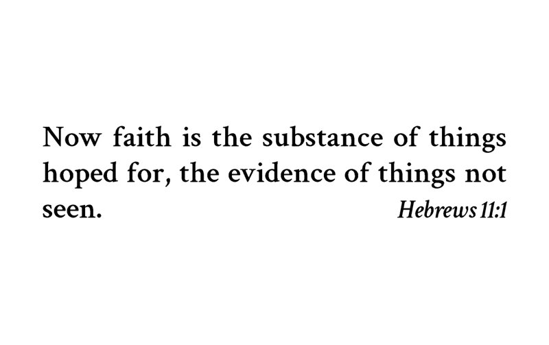
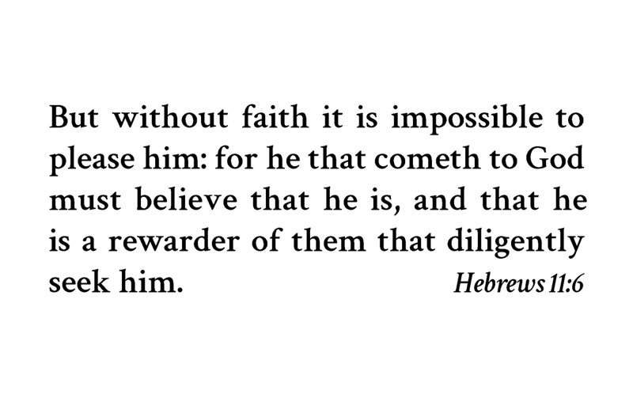

Card 1


Front
Now faith is the substance of things hoped for, the evidence of things not seen.
Hebrews 11:1Back
But without faith it is impossible to please him: for he that cometh to God must believe that he is, and that he is a rewarder of them that diligently seek him.
Hebrews 11:6